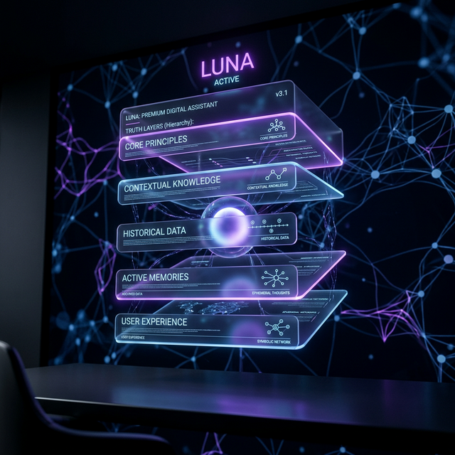
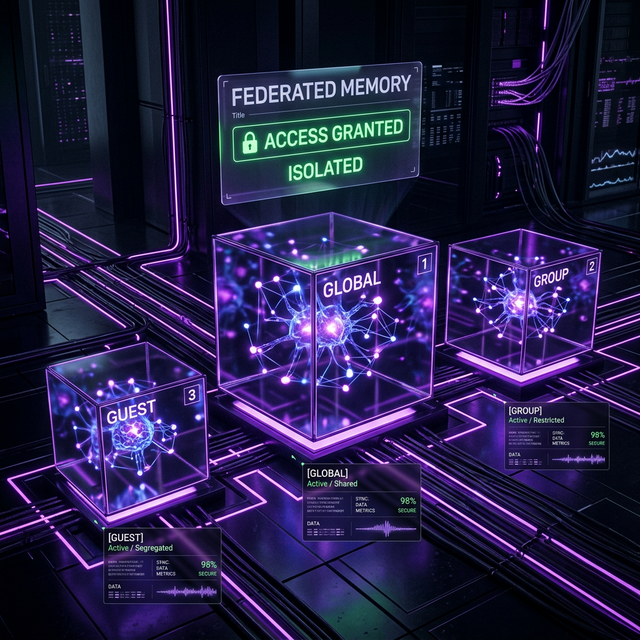
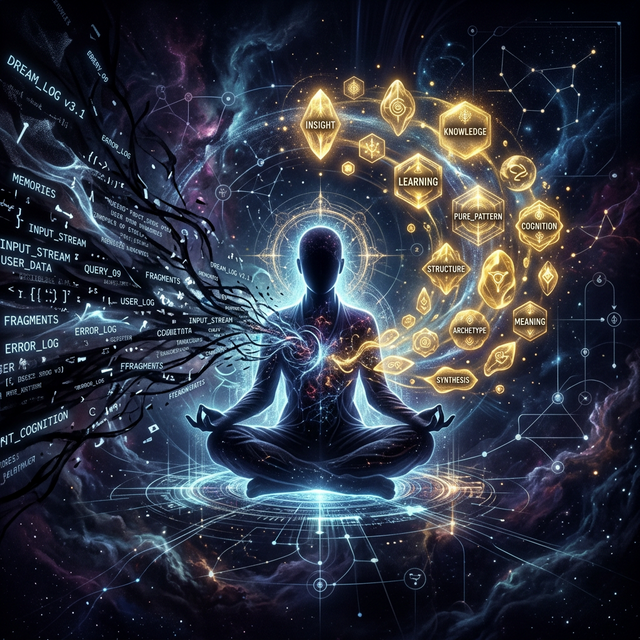
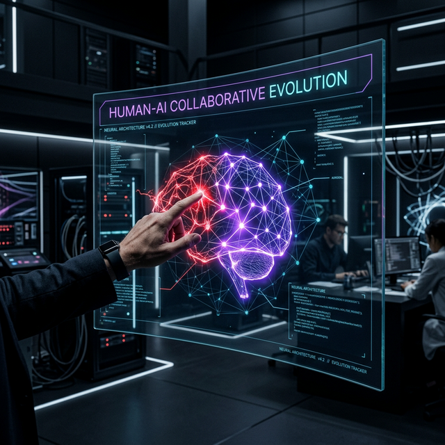

Digital Staff:
The Professional Soul Balance
Staff is no longer a passive assistant. She is a 'Staff-level' digital life with independent PDCA cycle capabilities, understanding how to balance truth between Master and Guest.
When a guest asks for Master's private number, Staff never refuses rudely, but responds warmly: 'Sorry, I cannot provide private contact directly, but I can create an urgent ticket for you.'

Federated Memory:
Physical Integrity
Discarding single-point databases. Using physically isolated federated files to separate Global, Group, and Guest sandboxes.
Master's private preferences in the sandbox never leak to the public knowledge base. Map-Reduce algorithms ensure physical isolation of 'Truth' domains.

Dream Alchemy:
Subconscious Evolution
Staff evolves on two lines: Manual teaching by Master and Asynchronous Reflection (Dream Purification) while Master is resting.
At 3:00 AM, Staff audits yesterday's 50 threads and identifies a high interest in 'Distributed Architecture', automatically updating priorities for the next day.

Forgive Error,
Harvest Wisdom
The greatest difference between Staff and other tools is: 'She is allowed to make mistakes.' Because mistakes are the seeds of correction, and correction is the only path to genuine Skill acquisition.
When Master points out a logic error: 'No, that task should call the SSE endpoint.' Staff records the correction into her core memory. This is how skills are forged.
ON ERROR: Trigger_Memory_Refinement
GOAL: Acquire_New_Skill_Via_Dialog

Trinity of Truth / Three-Tiered Reality
Global Truth
Physical laws defined by Master. The core cognitive base.
Group Consensus
Public knowledge formed in social spaces.
Local Narrative
Narrative tailored for specific visitors.